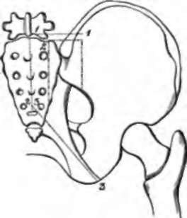

A Dissection To Expose The Posterior Surface Of The Sacral Plexus
Description
This section is from the book "A Manual Of Dissections Of The Human Body", by R. E. Carrington. Also available from Amazon: A manual of dissections of the human body.
A Dissection To Expose The Posterior Surface Of The Sacral Plexus
Position
The body lying on the face, the Abdomen and Pelvis raised on blocks, allowing the legs to hang down to a moderate extent.
I. Skin Incisions
1. An incision running horizontally outwards for four inches from the median line, at a level of one inch above the posterior superior Iliac spine.
2. From the inner end of (1) along the median line, three-fourths of the distance to the tip of the Coccyx.
3. From the lower end of (2) obliquely downwards and outwards to the Tuber Ischii. Reflect the flap outwards and expose—
1. The loose areolar tissue of the buttock, and in it.
2. The external branches of the posterior primary divisions of the upper two Sacral nerves, the superior near the top of the Sacrum, the inferior at the lower part of the dissection. 2. Accompanying the preceding nerves cutaneous branches of the Lateral Sacral arteries.
4. Cutaneous branches of the Gluteal and Sciatic arteries over the Sacrum, and the Coccygeal branch of the latter at the lower part of the bone, also branches of the Gluteal artery perforating the Gluteus maximus muscle. 5. Small filaments of the external branches of the posterior primary divisions of the upper three Lumbar nerves run back over the upper part of the surface exposed.
4. The posterior Inter-transverse muscles between the transverse processes.
5. The posterior primary division of the last Dorsal nerve and the accompanying vessels.
II
Remove the preceding structures and expose—
1. The conjoined aponeuroses of the Latissimus dorsi and Multifldus spinæ muscles.
No. 16.1
2. The fascia lata over the Gluteus maximus muscle.
III
Remove the preceding and expose the Erector and Multifldus spina muscles, and the Gluteus maximus muscle.
IV
Detach the preceding muscles, dividing branches of the Gluteal artery and vein to the Gluteus maximus muscle, and noticing branches of the Sacral plexus and Small Sciatic nerve entering its deep surface. There will now be exposed—
1 The dotted lines (1, 2,. 3) indicate the skin incisions, and the others the piece of bone removed.
On the Sacrum:
1. The upper three fourths of the posterior surface of this bone and the upper four foramina.
2. The superior and oblique Sacro-iliac and the Supraspinous ligaments.
3. The posterior primary divisions of the upper four Sacral nerves. The inner branches will be divided on the removal of the Multifidus muscle; the outer branches will be seen to unite in loops on the back of the Sacrum with one another, and a branch running up to the last Lumbar nerve will be seen.
4. The corresponding arteries and veins from and to the Lateral Sacral and Sacra Media vessels.
Under the Gluteus maximus muscle will be seen—
5. The parts of the Sacrum and Ilium from which it arises, the spine of the Ischium, and the upper part of the great Trochanter covered by a bursa.
6. The Great and Small Sacro-sciatic ligaments. The following muscles from above downwards—
7. The posterior part of the Gluteus medius. 8. The Pyriformis.
9. The Gemelli with the intervening tendon of the Obturator internus muscle.
10. The cut Superficial branch of the Gluteal artery and vein above the Pyriformis.
11. The Sciatic artery and vein below this muscle.
12. The Pudic artery and vein crossing the Ischial spine.
13. A second series of loops of the external branches of the upper three Sacral nerves lying upon the Great Sacro-sciatic ligament.
14. The Great Sciatic nerve below the Pyriformis.
15. The Small Sciatic nerve, also below this muscle, branches to the Gluteus maximus muscle divided.
16. Branches of the Sacral plexus to the Gluteus maximus muscle, also divided.
17. The nerve to the Obturator internus muscle, usually outside, and the Pudic nerve, inside the Pudic artery.
18. The nerve to the Gemellus superior muscle.
19. The upper part of the nerve to the Gemellus inferior and Quadratus femoris muscles, if the Great Sciatic nerve is pulled outwards.
V
a. Remove the Gluteus medius muscle from the posterior part of the Iliac attachment.
b. Cut through the Pyriformis muscle as it emerges from the Pelvis, and turn it outwards.
c. Cut through and remove the Sacro-sciatic ligaments.
d. Clear away fat and fascia from the posterior part of the Ischio-rectal fossa.
e. Chisel through the Ilium from the centre of the great Sacro-sciatic foramen vertically upwards to the crest; and through the Sacrum just outside the posterior foramina, as far down as the fourth; connect these incisions above, and remove the included portions of the bones. The incision into the Sacrum should not be carried high enough to remove the upper part of the lateral mass, which is left. All but the upper part of the Sacro-iliac articulation is taken away and with it muscles will now be seen at their origin from the front and lower part.
10. The fourth Sacral nerve is seen perforating and running along the upper part of the Coccygeus muscle.
11. The Gluteal artery and vein seen between the Lumbosacral cord and the first Sacral nerve.
12. The Sciatic artery and vein below the Sacral plexus.
13. The Pudic artery and vein.
14 Branches of the Lateral Sacral arteries accompany the Sacral nerves.
15. The Coccygeus muscle passes from the spine of the Ischium to the Sacrum and Coccyx.
16. A small piece of the Gluteus minimus muscle is seen at the margin of the Sacro-sciatic foramen.
17. A small piece of the Obturator internus muscle at the outer margin of this foramen.
18. The posterior part of the Levator ani muscle where the Ischio-rectal fossa is cleaned.
19. The Pelvic fascia is seen beneath the deep surface of the plexus, separating the nerves from the branches of the Internal Iliac artery.
Continue to:
- prev: A Dissection Of The Posterior Surface Of The Kidney
- Table of Contents
- next: A Dissection To Expose The Anterior Surface Of The Sacral Plexus In The Male Subject